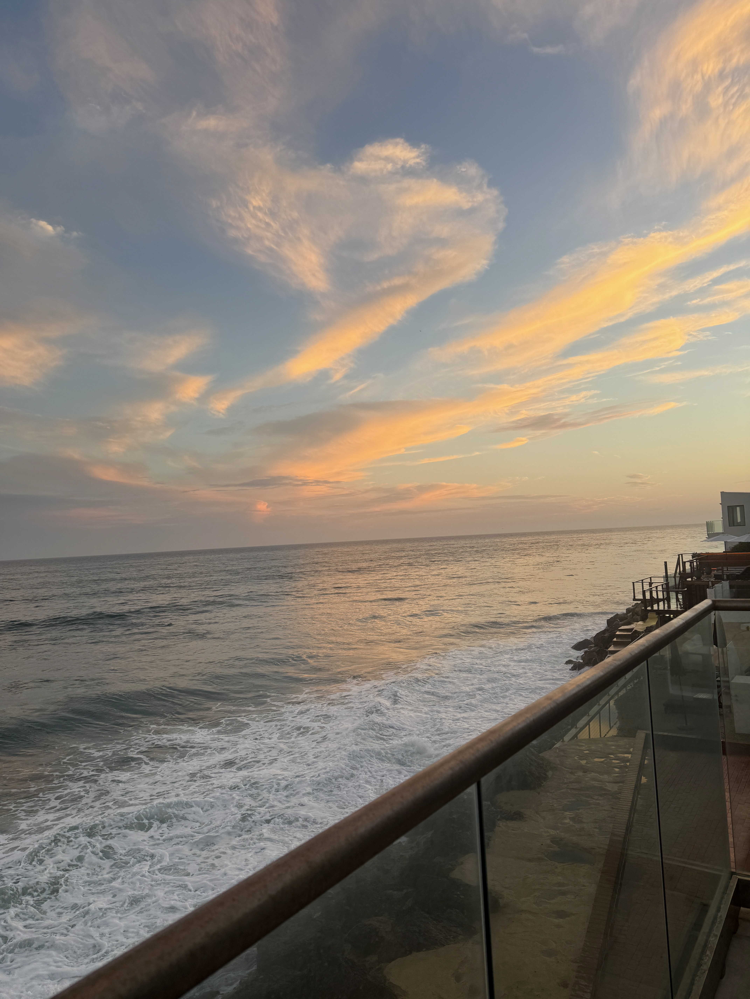
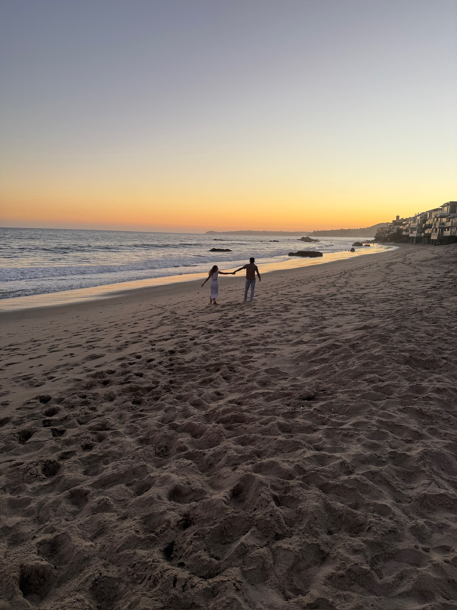

Swimming
Swimming in the ocean is my favorite activity in Malibu. I could spend hours enjoying the water and sunshine.
My Favorite Vacation Spot
A place filled with beautiful ocean views, family traditions, and unforgettable memories.
Explore My StoryA Special Place
Malibu, California, has always been one of my favorite places to visit. Every year, my family and I take a trip there, and it is something I always look forward to.
One of my favorite parts is staying in a beautiful house right on the water. I love being so close to the ocean and getting to enjoy the peaceful views.
Malibu is special to me because it gives me a chance to relax, connect with nature, and spend time with the people I love.

Unforgettable Moments

My favorite Malibu memory happened this year. We had family members in California who drove to come spend the day with us at the beach.
My mom, dad, sister, boyfriend, and other family members were all together. We spent the entire day swimming in the ocean, playing games, and having fun.
What made this day so special was having everyone together. It is one of those memories I will always look back on and smile about.
My Happy Place
Swimming in the ocean is my favorite activity in Malibu. I could spend hours enjoying the water and sunshine.
I love walking around the little shopping areas and exploring different places while we are visiting.
Trying different places to eat is always a fun part of our trips, especially when we are together as a family.
One of the best things about Malibu is the scenery. The ocean and beautiful surroundings make everything feel peaceful.
To me, Malibu is more than just a beautiful beach. It is a place where my family comes together, where we can slow down and enjoy the little things, and where some of my favorite memories are made.
No matter how many times I visit, Malibu will always feel like my home away from home.